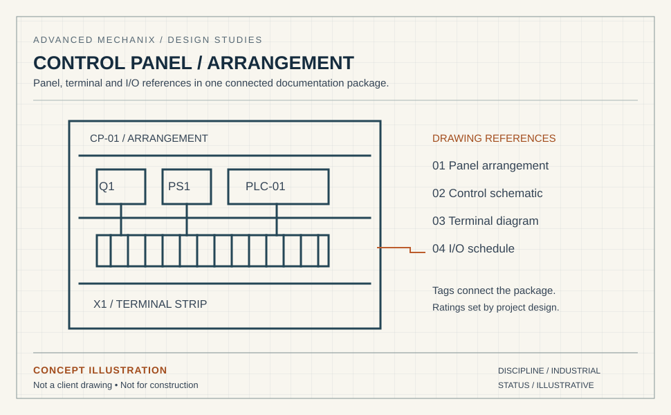

Control panel design.
Clear through to commissioning.
Panel arrangements, wiring and terminal diagrams, PLC I/O schedules and control documentation for industrial plants, manufacturing OEMs and machinery builders. One connected package for design review, fabrication and commissioning.
The panel documents need to describe the same cabinet.
The schematic, panel arrangement, terminal schedule and PLC I/O list must agree on device tags and connections. When a reference drifts, the panel builder has to stop and ask, or the commissioning team finds it later. We produce the documents as one package in EPLAN or AutoCAD Electrical, using the libraries and project conventions in your brief.
Start with the control philosophy, I/O list and available mark-ups. We agree the required panel standard, component information and review responsibilities with your team. Listing, certification and any statutory sign-off are separate requirements to settle before production.
- EPLAN and AutoCAD Electrical native
- UL 508A-compliant panel documentation for US markets
- IEC 61439 compliance for international markets
- Rockwell, Siemens, Schneider PLC platforms
- Reconciled schematic / layout / I/O / wire-list
- Scope and review requirements agreed before production

Control panel documentation types

Schematic Diagrams
Ladder and schematic logic diagrams for power, control, PLC I/O, and communication circuits per EPLAN or AutoCAD Electrical.

Panel Layout Drawings
Panel enclosure layouts with component placement, DIN rail detail, wire duct routing, and heat-dissipation verification.

Terminal & Wire Schedules
Terminal schedules, wire lists, cable schedules, and interconnect diagrams reconciled to schematic and layout.

PLC I/O Schedules
Input/output schedules with tag names, device references, card addresses, and cross-reference to schematic sheets.

Control Narrative
Process control narrative documents describing sequence of operation, interlocks, alarms, and operator interface behavior.
BOM & Certification Docs
Bill of materials with part numbers, supplier references, component certifications, and UL 508A compliance documentation.
Start with a defined scope.
Agree the source information, deliverables and review requirements before the first issue.
Your team. Our team.
A clear way to work.
Agree the standards, review responsibilities and working arrangements before the first issue.
Quality: who checks the drawings?
The checking brief covers the project standard, drawing references and review responsibilities. We agree the internal checks, client review sequence, revision allowance and response windows as part of the package scope.
Standards: will you draw to our codes and templates?
We work to the standard that applies to your project: NEC (US), IEC 60364 and IEC 61439, AS/NZS 3000 (Australia and New Zealand), CSA C22.1 (Canada) and BS 7671 (UK). We draw inside your title blocks, layer conventions, cell and block libraries, not ours.
IP and NDA: what happens to our files?
Confidentiality and file access are agreed before source material is shared. Tell us if you require an NDA or a client-managed workspace, VDI or VPN. The scope identifies the permitted environment, access arrangements and handover requirements.
Stamps: who signs the drawings?
If your package requires a PE, Chartered Engineer or other statutory sign-off, tell us during scoping. We agree the responsible party and review requirements before production starts.
Time zones: when can we talk to the team?
Our production team is based in Pakistan (PKT, UTC+5). We agree your project’s working hours and handover arrangements during scoping. The table below uses a 09:00–18:00 PKT reference window to help plan the overlap; it is not a committed project schedule.
| Your time zone | Reference window, your clock | Overlap with your 09:00–17:00 |
|---|---|---|
| Perth — AWST (UTC+8) | 12:00–21:00 | 5 h (12:00–17:00) |
| Brisbane, Sydney — AEST (UTC+10) | 14:00–23:00 | 3 h (14:00–17:00) |
| Dubai — GST (UTC+4) | 08:00–17:00 | 8 h (09:00–17:00) |
| London — GMT (UTC+0) | 04:00–13:00 | 4 h (09:00–13:00) |
| New York — ET (EST, UTC−5) | 23:00–08:00 (overnight) | None — overnight handover |
| Los Angeles — PT (PST, UTC−8) | 20:00–05:00 (overnight) | None — overnight handover |
Daylight saving: Sydney, Melbourne, Canberra and Hobart move to AEDT (UTC+11) from October to April, cutting the overlap to 2 h (15:00–17:00); Queensland and Western Australia stay on standard time. UK summer time (BST, UTC+1) widens the London overlap to 5 h (09:00–14:00). US daylight time moves our day to 00:00–09:00 EDT and 21:00–06:00 PDT, so US teams can plan an overnight handover; the actual arrangement is agreed for your project.
Control panel design questions
What should we supply for a control panel package?
How do you connect the schematic to the terminal and I/O lists?
Does panel documentation include listing or statutory certification?
Can you update drawings for an existing panel?
Reconciled panel documentation without the in-house overhead.
Tell us the source information, drawing types and target issue date. We agree the deliverables, review allowance and price before work starts.